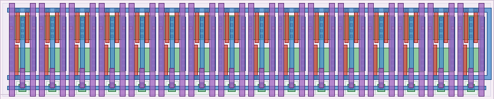
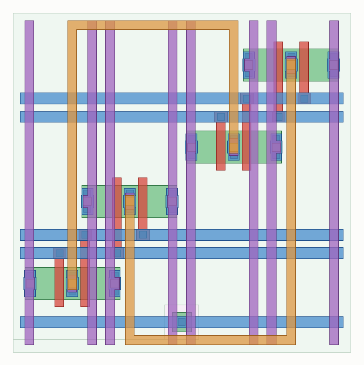
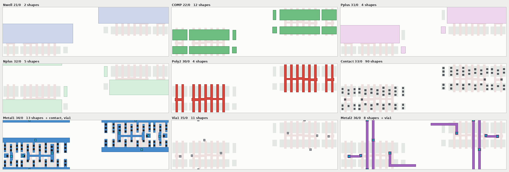
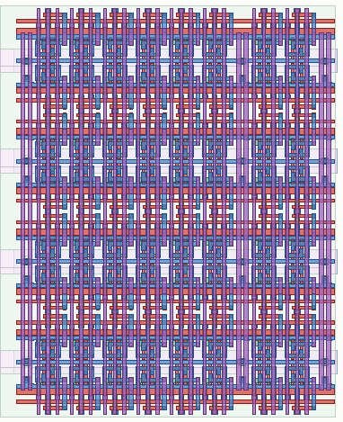

engineering log. everything here is drawn geometry or a measurement. where I got something wrong I have left it in, because the mistakes were more instructive than the results.
layout evidence refreshed 2026-08-14 from gf180mcuD PDK commit f6eeac7dad085ffcc829ccfd721f7b4ce39edcf7.
2.50 × 3.29 = 8.225 µm²/bit. The 5 V cell that ships in the PDK is 3.68 × 4.84 = 17.81. So 2.17×.
I expected more. Gate area shrank 4.6× going from the 5 V devices to 3.3 V ones, and the cell only got 2.17× smaller. The cell is bounded by rules, not by transistors. What actually sets the dimensions: 0.80 µm of N-well spacing between the diffusions, which is voltage-independent; the 0.22 µm contact with 0.15 to poly; and M1 spacing at 0.23, which fixes both the cell height and the pass-gate x position. Shrinking the devices further would not move any of those.
β = 2.036. The foundry cell is 2.032. That is not a coincidence — the topology was reverse-engineered from it vertex by vertex before anything was drawn.
Read SNM 12.2 % of VDD at tt, 8.5 % at the worst corner (fs 125 °C). Relatively better than the 5 V cell at both, which I did not expect either. Monte-Carlo N=500 gives 20.6σ at fs against a 4.5σ requirement for 262 144 bits.
The number I actually watch is the 3σ-stress case at 5.97σ. That is the model-uncertainty proxy, and it is the one that would kill the design if the models are optimistic.
SNM extraction is 45° rotation, min over the two lobes, /√2. A max-vertical-gap/2 approximation reads about 1.5× high. I did not reinvent it; it is lifted from the 5 V deck so the two are directly comparable.
3.09 × 4.65 = 14.369 µm²/bit. +75 % on one 6T, and 19 % smaller than the 5 V single-port cell while exposing a second, read-only port.
The point is not the area, it is that the read port never touches the storage node. Wide-read SNM equals hold SNM: 773.5 mV at fs 125 °C against 253.6 for a 6T read. This removes storage-node read disturb; it does not remove the separate sense-reference and offset-margin argument.
The physical stack is now RBL–MRD(QB)–MRS(RWL)–VSS. RBL shares the alternate-row boundary, read VSS joins core VSS locally, and 0.28 µm M2 bitlines widen only at Via1 pads. The preceding 3.20 × 4.82 layout was 15.424 µm²; this is 6.8 % smaller.
Against two raw 6T copies it saves 12.7 %, before counting the second array's duplicated periphery and write-coherence wiring. The comparison is one coherent 8T state versus two coherent 6T states, not 8T versus one 6T.
The primary tile is 8 × 128 payload bits plus a separate 8 × 8 E8M0 sidecar. Both use the isolated read port and return in one replica-timed 136-bit event. The CPU still sees four 32-bit payload slices and can piggyback the row's scale byte on a write.
The sidecar is 29.19 × 37.20 µm including tap straps. It is intended for the otherwise empty corner where row and column periphery meet. That can make its bounding-box cost zero, but only if the assembled periphery proves the corner is at least that large. An inline 8 × 136 layout remains the verified fallback at 456.00 × 37.20 µm.
The 6T schematic-level read bench had no access time for most of its life because it had no sense amplifier. It has a SPICE sense circuit now; that circuit is not yet drawn. Bitline capacitance is extracted, 0.98 fF per cell; the wordline is a five-segment RC ladder at the PDK's own 6.8 Ω/sq salicided poly.
| read, ns | tt 25° | ss 125° | ff −40° | fs 125° | sf 125° |
|---|---|---|---|---|---|
| 16 rows | 0.292 | 0.489 | 0.300 | 0.291 | 0.351 |
| 64 rows | 0.326 | 0.544 | 0.322 | 0.519 | 0.572 |
| 128 rows | 0.556 | 0.779 | 0.336 | 0.546 | 0.600 |
8× the rows costs 1.6× the access time. That is what putting the bitlines on the amplifier's gates buys.
Writes: 0.095–0.332 ns. 30 of 30 wrote the value asked for. Writing a 1 is consistently slower than writing a 0 — that asymmetry is the driver's, not the cell's.
Sense amplifier offset, 300 Monte-Carlo samples: σ = 14.96 mV at ss, 17.02 at sf, mean essentially zero. Worst configuration clears it by 6.1σ.
Do not compare 0.78 ns to the foundry macro's 11.89 ns min_period. That number covers decode, precharge, write-back and self-timed margin. This is the sense path only. The gap is missing work, not a result.
There is speed left on the table: 100 mV was an arbitrary trigger, and a 4.5σ target needs 77. The table above is a safe operating point, not a floor.
The optimized 8T has its own narrower claim: with the extracted 1.11 fF/cell RBL capacitance, all 20 five-corner selected/hold smoke cases pass. Selected-one RBL droop is 0–0.225 mV and worst storage-node error is 0.015 mV. The slowest selected-zero half discharge is 0.187 ns for the lumped eight-cell column. This is a transistor/column check with no wire resistance, reference, sense latch or output timing, so it is not a macro access-time result.
This is the useful part.
The first sense amplifier read back the complement of the stored bit, at the typical corner, while looking healthy. A cross-coupled latch isolated from the bitlines by NMOS pass gates. With both bitlines near VDD and 140 mV between them the pass gate sits at VGS ≈ 0.15 V and is off. The latch saw about 1 mV and resolved on its own offset. Precharging the latch nodes did not help — the gate is off in that direction too. Topology change, not a resize.
The write driver wrote the complement of every value. q connects to BL, so writing a 1 means pulling BLB low; I had the gate assignments the other way round. The cell flipped correctly and quickly, to the wrong data.
VDD was four separate nets and VSS fifty-eight. Rails are horizontal and per row and nothing tied them in y. DRC has no opinion on a broken net, and my own continuity checker only proved a rail spans the array horizontally. Array LVS found it. A 1×1 array cannot: one cell between two strap columns ties everything by accident.
RBL shorted to VSS. A VSS strap laid straight over the RBL pad, because both are centred on the cell. Two overlapping shapes on one layer are one shape, so there is no spacing to violate and DRC passes. The net was perfectly continuous — to the wrong thing.
magic silently dropped every NMOS in the design and still produced a plausible capacitance for every bitline. The implants are partitioned at the top level, so an NMOS is split across the hierarchy: diffusion and poly in the child cell, the Nplus that makes it an NMOS in the parent. The PMOS survived because its rule wants NPLUS absent. One gds flatglob fixes it. Check the device count before you read anything else.
All fifty LEF pins read back dangling the first time OpenROAD parsed it. The geometry was there; the tech LEF was not loaded, so the layer names resolved to nothing, and geometry on an undefined layer is discarded in silence. My generator's own "every pin has geometry" check passed happily.
A bitline twist that does nothing. One twist at mid-array bought 9 %, all of it the two edge columns; interior pairs went 10.603 → 10.626 fF. Victim and aggressor swap at the same height, so the adjacency they had is the adjacency they keep. Staggering them — even columns crossing a third of the way up, odd columns two thirds — gives 2.4× less differential coupling. I would have written the first one up as a win if I had measured total capacitance instead of the imbalance.
Poly crossing a COMP bar it was not gating, twice. In the precharge, then again in the column mux after I had written the warning about it in that file's own docstring. Forty gate regions where thirty-two were wanted.
Two of the sense-amp faults were in the measurement, not the circuit: I looked for the wrong sign, and a direction check silently compared against a value that was never measured, flagging all 30 cases as failures. A check that cannot run is worse than no check. It looks like a real defect and sends you after the wrong thing.
Three checks, and every one of them has caught something the other two passed.
| check | proves | caught |
|---|---|---|
| inspect_array.py | the net is unbroken | 7 connectivity breaks, all DRC-clean |
| gf180mcu.drc | the geometry is legal | the usual |
| gf180mcu.lvs | it is the right net | RBL–VSS short; VDD split four ways |
LVS runs on the arrays, not on 1×1 cells, against schematics generated from the same (rows, cols). 6T 16×16 (1536 devices), 8T 8×8 (512), 8T 8×128 (8192), and the inline 8×136 fallback (8704 devices) all match. Their DRC reports contain respectively 4 / 6 / 5 / 5 markers, every one a classified whole-die density/fill rule a small coupon cannot satisfy; local geometry has zero markers.
The pitch-repeated periphery now uses the same rule: a generated schematic is compared against the complete row, not just one visually plausible cell. The 16-column precharge row (48 PFETs) and 16-group 4:1 mux row (128 NFETs) both pass local DRC and LVS. Their remaining DRC entries are classified whole-die density checks; PEX and extracted transient simulation are still open.
The inspector also traces nets now: COMP minus Poly2 for diffusion islands, union-find through every contact and via, and it asserts one name is one net, one net is one name. Two independent extractors agree on device count — magic 1536 / 512 / 512 against KLayout LVS.
| gate | state | what it currently proves |
|---|---|---|
| generated geometry | pass | 5 nm grid, 6/8 gates per bit, continuous named rails, legal layer inventory |
| GF180 DRC | pass local | 8×8, 8×128 and 8×136; density/fill deferred to die assembly |
| array LVS | pass | read order RBL–MRD–MRS–VSS, no boundary shorts or split supplies |
| parasitic extraction | C only | BL 1.30, BLB 1.31, RBL 1.11 fF/cell; wire/via resistance remains open |
| five-corner 8T smoke | 20 / 20 pass | selected discharge, selected-one/hold leakage and storage-node disturbance |
| RTL port contract | pass | 128+8 association, four CPU slices, collision suppression and replica timeout |
| sense/reference mismatch | open | needs drawn single-ended sense/reference path and post-layout Monte-Carlo |
| R+C, 136-bit bounce, macro timing | open | required before frequency, power or Liberty claims |




The drawn 6T array is 8.9 µm²/bit. A macro is not: it also carries a decoder, sense amplifiers, write drivers and an IO ring, none of which are drawn. So I fitted a two-term model on the four foundry macros, whose areas are exact from their LEF, and checked it reproduces all four before using it.
FIXED 85 025 um2 decoder, control, IO ring MARGINAL 30.37 um2/bit array band = 1.70x its own bitcell validation: all four macros reproduced to +0.00%
Applied to the FTL cell, an 8 KB memory is 1.08 mm² against 2.08 for the same structure with the foundry cell. Doubling FIXED — the one assumption that could be wrong — moves it by 8 %.
Related, and measured from the PDK LEF: every gf180mcu_fd_ip_sram macro is 431.86 µm wide at every depth, 64 through 512 words, with height linear at 0.5625 µm/word. So each carries 85 026 µm² of fixed periphery, paid once per eight bits of width. That is why a 128-bit bank costs +122 % in macros. A generated array pays one decoder for the whole row: three real 4096-bit arrays, DRC- and LVS-clean, measure 8.965 / 9.047 / 8.924 µm²/bit across a 4× aspect change. A 1.4 % spread.
| block | state |
|---|---|
| bitcell, 6T and 8T | drawn, DRC + LVS clean, extracted |
| arrays to 8704 devices | 8×8, 8×128 and 8×136 local DRC + LVS clean |
| precharge | 16-column row, local DRC + LVS clean; PEX open |
| 4:1 column mux | 16-group row, local DRC + LVS clean; PEX open |
| wordline driver | 32-driver left/even + right/odd strips local DRC, cut-stack and 512-device LVS clean; R+C / timing open |
| sense amp, write driver | SPICE only, measured, not drawn |
| row decoder | hierarchical 2 × 3→8 plus 64 local combines specified, not drawn |
| MXFP4 array views | namespaced 8×128 + 8×8 + inline 8×136 GDS/LEF/CDL generated and LEF-audited |
| .lib | none, and none should be written yet |
The goal is a macro for a tapeout trial. A trial has to answer four things: does the cell hold data and over what range, what is the yield and failure pattern, is the drawn cell the cell I simulated, and do the DRC-clean structures actually fabricate. It does not have to answer "what is the setup time at 50 MHz". So the trial macro is DC-accessible and slow, measured off-chip through the column mux. The sense amplifier gets fabricated beside the array as its own structure, so a broken amplifier cannot mask a working cell — which is the commonest way a first memory trial wastes its silicon.
Organisation: 64 × 64 array, 4:1 column mux, 256 words × 16 bits.
Nothing here derives from licensed gf180mcu_ocd_* content. The topology came from the Apache-2.0 foundry cell; the devices are the foundry's own Apache-2.0 models. It is 3.3 V, and the system it would attach to signs off at 5 V — that is a voltage-domain decision before it is a circuit one.